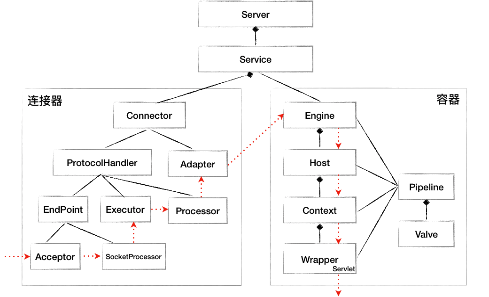
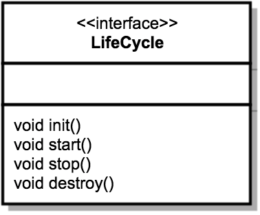
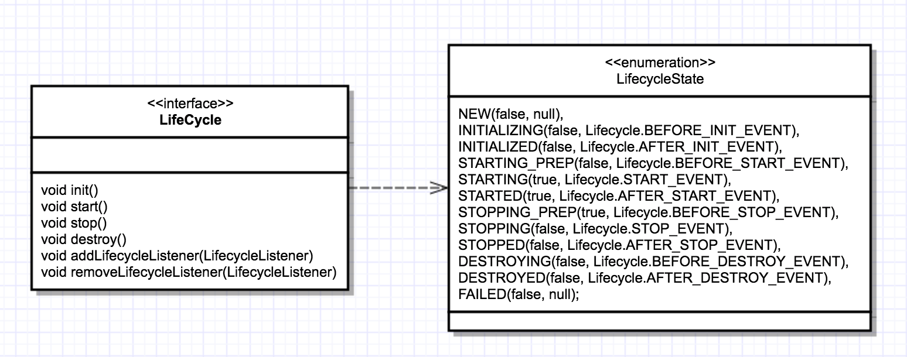
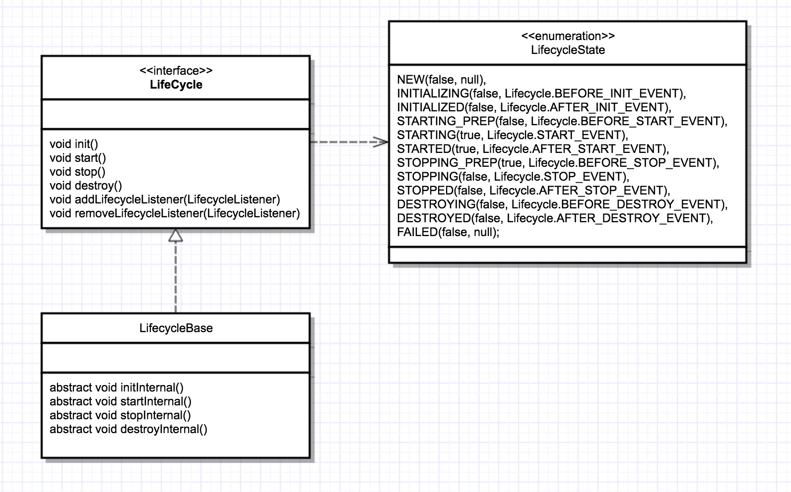
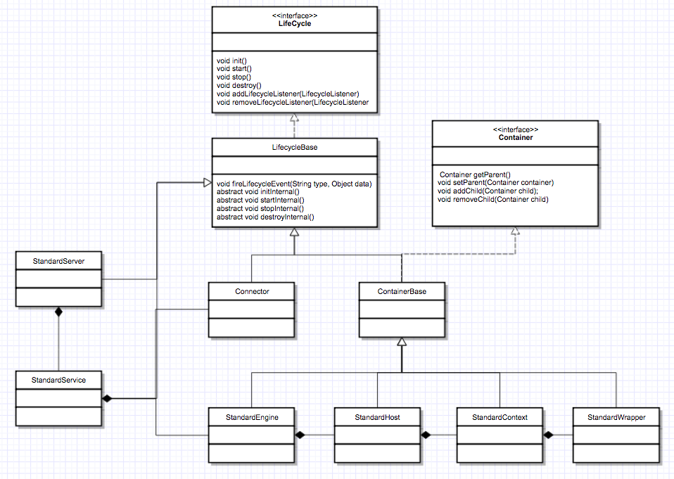

- 00 开篇词 Java程序员如何快速成长？.md.html
- 01 Web容器学习路径.md.html
- 02 HTTP协议必知必会.md.html
- 03 你应该知道的Servlet规范和Servlet容器.md.html
- 04 实战：纯手工打造和运行一个Servlet.md.html
- 05 Tomcat系统架构（上）： 连接器是如何设计的？.md.html
- 06 Tomcat系统架构（下）：聊聊多层容器的设计.md.html
- 07 Tomcat如何实现一键式启停？.md.html
- 08 Tomcat的“高层们”都负责做什么？.md.html
- 09 比较：Jetty架构特点之Connector组件.md.html
- 10 比较：Jetty架构特点之Handler组件.md.html
- 11 总结：从Tomcat和Jetty中提炼组件化设计规范.md.html
- 12 实战：优化并提高Tomcat启动速度.md.html
- 13 热点问题答疑（1）：如何学习源码？.md.html
- 14 NioEndpoint组件：Tomcat如何实现非阻塞I_O？.md.html
- 15 Nio2Endpoint组件：Tomcat如何实现异步I_O？.md.html
- 16 AprEndpoint组件：Tomcat APR提高I_O性能的秘密.md.html
- 17 Executor组件：Tomcat如何扩展Java线程池？.md.html
- 18 新特性：Tomcat如何支持WebSocket？.md.html
- 19 比较：Jetty的线程策略EatWhatYouKill.md.html
- 20 总结：Tomcat和Jetty中的对象池技术.md.html
- 21 总结：Tomcat和Jetty的高性能、高并发之道.md.html
- 22 热点问题答疑（2）：内核如何阻塞与唤醒进程？.md.html
- 23 Host容器：Tomcat如何实现热部署和热加载？.md.html
- 24 Context容器（上）：Tomcat如何打破双亲委托机制？.md.html
- 25 Context容器（中）：Tomcat如何隔离Web应用？.md.html
- 26 Context容器（下）：Tomcat如何实现Servlet规范？.md.html
- 27 新特性：Tomcat如何支持异步Servlet？.md.html
- 28 新特性：Spring Boot如何使用内嵌式的Tomcat和Jetty？.md.html
- 29 比较：Jetty如何实现具有上下文信息的责任链？.md.html
- 30 热点问题答疑（3）：Spring框架中的设计模式.md.html
- 31 Logger组件：Tomcat的日志框架及实战.md.html
- 32 Manager组件：Tomcat的Session管理机制解析.md.html
- 33 Cluster组件：Tomcat的集群通信原理.md.html
- 34 JVM GC原理及调优的基本思路.md.html
- 35 如何监控Tomcat的性能？.md.html
- 36 Tomcat I_O和线程池的并发调优.md.html
- 37 Tomcat内存溢出的原因分析及调优.md.html
- 38 Tomcat拒绝连接原因分析及网络优化.md.html
- 39 Tomcat进程占用CPU过高怎么办？.md.html
- 40 谈谈Jetty性能调优的思路.md.html
- 41 热点问题答疑（4）： Tomcat和Jetty有哪些不同？.md.html
- 特别放送 如何持续保持对学习的兴趣？.md.html
- 结束语 静下心来，品味经典.md.html
- 捐赠
07 Tomcat如何实现一键式启停？
通过前面的学习，相信你对Tomcat的架构已经有所了解，知道了Tomcat都有哪些组件，组件之间是什么样的关系，以及Tomcat是怎么处理一个HTTP请求的。下面我们通过一张简化的类图来回顾一下，从图上你可以看到各种组件的层次关系，图中的虚线表示一个请求在Tomcat中流转的过程。

上面这张图描述了组件之间的静态关系，如果想让一个系统能够对外提供服务，我们需要创建、组装并启动这些组件；在服务停止的时候，我们还需要释放资源，销毁这些组件，因此这是一个动态的过程。也就是说，Tomcat需要动态地管理这些组件的生命周期。
在我们实际的工作中，如果你需要设计一个比较大的系统或者框架时，你同样也需要考虑这几个问题：如何统一管理组件的创建、初始化、启动、停止和销毁？如何做到代码逻辑清晰？如何方便地添加或者删除组件？如何做到组件启动和停止不遗漏、不重复？
今天我们就来解决上面的问题，在这之前，先来看看组件之间的关系。如果你仔细分析过这些组件，可以发现它们具有两层关系。
第一层关系是组件有大有小，大组件管理小组件，比如Server管理Service，Service又管理连接器和容器。
第二层关系是组件有外有内，外层组件控制内层组件，比如连接器是外层组件，负责对外交流，外层组件调用内层组件完成业务功能。也就是说，请求的处理过程是由外层组件来驱动的。
这两层关系决定了系统在创建组件时应该遵循一定的顺序。
第一个原则是先创建子组件，再创建父组件，子组件需要被“注入”到父组件中。
第二个原则是先创建内层组件，再创建外层组件，内层组件需要被“注入”到外层组件。
因此，最直观的做法就是将图上所有的组件按照先小后大、先内后外的顺序创建出来，然后组装在一起。不知道你注意到没有，这个思路其实很有问题！因为这样不仅会造成代码逻辑混乱和组件遗漏，而且也不利于后期的功能扩展。
为了解决这个问题，我们希望找到一种通用的、统一的方法来管理组件的生命周期，就像汽车“一键启动”那样的效果。
一键式启停：Lifecycle接口
我在前面说到过，设计就是要找到系统的变化点和不变点。这里的不变点就是每个组件都要经历创建、初始化、启动这几个过程，这些状态以及状态的转化是不变的。而变化点是每个具体组件的初始化方法，也就是启动方法是不一样的。
因此，我们把不变点抽象出来成为一个接口，这个接口跟生命周期有关，叫作Lifecycle。Lifecycle接口里应该定义这么几个方法：init、start、stop和destroy，每个具体的组件去实现这些方法。
理所当然，在父组件的init方法里需要创建子组件并调用子组件的init方法。同样，在父组件的start方法里也需要调用子组件的start方法，因此调用者可以无差别的调用各组件的init方法和start方法，这就是组合模式的使用，并且只要调用最顶层组件，也就是Server组件的init和start方法，整个Tomcat就被启动起来了。下面是Lifecycle接口的定义。

可扩展性：Lifecycle事件
我们再来考虑另一个问题，那就是系统的可扩展性。因为各个组件init和start方法的具体实现是复杂多变的，比如在Host容器的启动方法里需要扫描webapps目录下的Web应用，创建相应的Context容器，如果将来需要增加新的逻辑，直接修改start方法？这样会违反开闭原则，那如何解决这个问题呢？开闭原则说的是为了扩展系统的功能，你不能直接修改系统中已有的类，但是你可以定义新的类。
我们注意到，组件的init和start调用是由它的父组件的状态变化触发的，上层组件的初始化会触发子组件的初始化，上层组件的启动会触发子组件的启动，因此我们把组件的生命周期定义成一个个状态，把状态的转变看作是一个事件。而事件是有监听器的，在监听器里可以实现一些逻辑，并且监听器也可以方便的添加和删除，这就是典型的观察者模式。
具体来说就是在Lifecycle接口里加入两个方法：添加监听器和删除监听器。除此之外，我们还需要定义一个Enum来表示组件有哪些状态，以及处在什么状态会触发什么样的事件。因此Lifecycle接口和LifecycleState就定义成了下面这样。

从图上你可以看到，组件的生命周期有NEW、INITIALIZING、INITIALIZED、STARTING_PREP、STARTING、STARTED等，而一旦组件到达相应的状态就触发相应的事件，比如NEW状态表示组件刚刚被实例化；而当init方法被调用时，状态就变成INITIALIZING状态，这个时候，就会触发BEFORE_INIT_EVENT事件，如果有监听器在监听这个事件，它的方法就会被调用。
重用性：LifecycleBase抽象基类
有了接口，我们就要用类去实现接口。一般来说实现类不止一个，不同的类在实现接口时往往会有一些相同的逻辑，如果让各个子类都去实现一遍，就会有重复代码。那子类如何重用这部分逻辑呢？其实就是定义一个基类来实现共同的逻辑，然后让各个子类去继承它，就达到了重用的目的。
而基类中往往会定义一些抽象方法，所谓的抽象方法就是说基类不会去实现这些方法，而是调用这些方法来实现骨架逻辑。抽象方法是留给各个子类去实现的，并且子类必须实现，否则无法实例化。
比如宝马和荣威的底盘和骨架其实是一样的，只是发动机和内饰等配套是不一样的。底盘和骨架就是基类，宝马和荣威就是子类。仅仅有底盘和骨架还不是一辆真正意义上的车，只能算是半成品，因此在底盘和骨架上会留出一些安装接口，比如安装发动机的接口、安装座椅的接口，这些就是抽象方法。宝马或者荣威上安装的发动机和座椅是不一样的，也就是具体子类对抽象方法有不同的实现。
回到Lifecycle接口，Tomcat定义一个基类LifecycleBase来实现Lifecycle接口，把一些公共的逻辑放到基类中去，比如生命状态的转变与维护、生命事件的触发以及监听器的添加和删除等，而子类就负责实现自己的初始化、启动和停止等方法。为了避免跟基类中的方法同名，我们把具体子类的实现方法改个名字，在后面加上Internal，叫initInternal、startInternal等。我们再来看引入了基类LifecycleBase后的类图：

从图上可以看到，LifecycleBase实现了Lifecycle接口中所有的方法，还定义了相应的抽象方法交给具体子类去实现，这是典型的模板设计模式。
我们还是看一看代码，可以帮你加深理解，下面是LifecycleBase的init方法实现。
@Override
public final synchronized void init() throws LifecycleException {
//1. 状态检查
if (!state.equals(LifecycleState.NEW)) {
invalidTransition(Lifecycle.BEFORE_INIT_EVENT);
}
try {
//2.触发INITIALIZING事件的监听器
setStateInternal(LifecycleState.INITIALIZING, null, false);
//3.调用具体子类的初始化方法
initInternal();
//4. 触发INITIALIZED事件的监听器
setStateInternal(LifecycleState.INITIALIZED, null, false);
} catch (Throwable t) {
...
}
}
这个方法逻辑比较清楚，主要完成了四步：
第一步，检查状态的合法性，比如当前状态必须是NEW然后才能进行初始化。
第二步，触发INITIALIZING事件的监听器：
setStateInternal(LifecycleState.INITIALIZING, null, false);
在这个setStateInternal方法里，会调用监听器的业务方法。
第三步，调用具体子类实现的抽象方法initInternal方法。我在前面提到过，为了实现一键式启动，具体组件在实现initInternal方法时，又会调用它的子组件的init方法。
第四步，子组件初始化后，触发INITIALIZED事件的监听器，相应监听器的业务方法就会被调用。
setStateInternal(LifecycleState.INITIALIZED, null, false);
总之，LifecycleBase调用了抽象方法来实现骨架逻辑。讲到这里， 你可能好奇，LifecycleBase负责触发事件，并调用监听器的方法，那是什么时候、谁把监听器注册进来的呢？
分为两种情况：
Tomcat自定义了一些监听器，这些监听器是父组件在创建子组件的过程中注册到子组件的。比如MemoryLeakTrackingListener监听器，用来检测Context容器中的内存泄漏，这个监听器是Host容器在创建Context容器时注册到Context中的。
我们还可以在
server.xml中定义自己的监听器，Tomcat在启动时会解析server.xml，创建监听器并注册到容器组件。
生周期管理总体类图
通过上面的学习，我相信你对Tomcat组件的生命周期的管理有了深入的理解，我们再来看一张总体类图继续加深印象。

这里请你注意，图中的StandardServer、StandardService等是Server和Service组件的具体实现类，它们都继承了LifecycleBase。
StandardEngine、StandardHost、StandardContext和StandardWrapper是相应容器组件的具体实现类，因为它们都是容器，所以继承了ContainerBase抽象基类，而ContainerBase实现了Container接口，也继承了LifecycleBase类，它们的生命周期管理接口和功能接口是分开的，这也符合设计中接口分离的原则。
本期精华
Tomcat为了实现一键式启停以及优雅的生命周期管理，并考虑到了可扩展性和可重用性，将面向对象思想和设计模式发挥到了极致，分别运用了组合模式、观察者模式、骨架抽象类和模板方法。
如果你需要维护一堆具有父子关系的实体，可以考虑使用组合模式。
观察者模式听起来“高大上”，其实就是当一个事件发生后，需要执行一连串更新操作。传统的实现方式是在事件响应代码里直接加更新逻辑，当更新逻辑加多了之后，代码会变得臃肿，并且这种方式是紧耦合的、侵入式的。而观察者模式实现了低耦合、非侵入式的通知与更新机制。
而模板方法在抽象基类中经常用到，用来实现通用逻辑。
课后思考
从文中最后的类图上你会看到所有的容器组件都扩展了ContainerBase，跟LifecycleBase一样，ContainerBase也是一个骨架抽象类，请你思考一下，各容器组件有哪些“共同的逻辑”需要ContainerBase由来实现呢？
不知道今天的内容你消化得如何？如果还有疑问，请大胆的在留言区提问，也欢迎你把你的课后思考和心得记录下来，与我和其他同学一起讨论。如果你觉得今天有所收获，欢迎你把它分享给你的朋友。
© 2019 - 2023 Liangliang Lee. Powered by gin and hexo-theme-book.